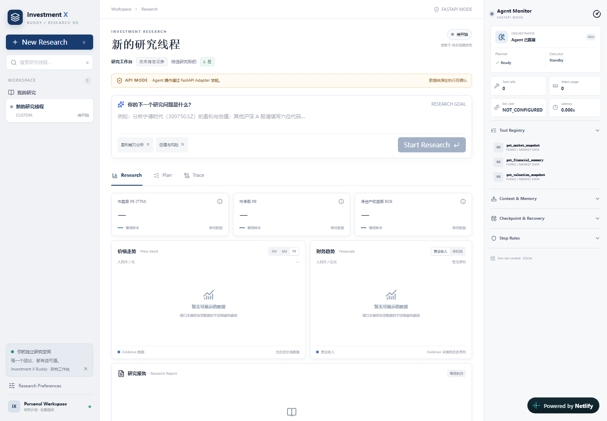

Investment X Buddy · 投资研究 Agent 工作台
面向有基础金融知识、希望借助 AI 完成初步研究的个人用户，探索把“提出问题、拆解任务、收集数据、核对依据、形成报告”组织为连续的研究流程。基于同花顺笔试任务，借助 AI 编程工具完成原型搭建，重点验证研究过程的呈现方式与人机协同设计。

线上工作台实际界面（研究创建前）。可查看任务计划、执行过程与证据报告；点击图片放大。
产品视角：把一次提问组织成可检查的研究过程
01 · 问题定义：研究过程容易断开初步研究通常需要在问答、行情图表和资料之间切换。围绕“了解一家公司的经营与估值”这样的目标，产品假设是：把任务、数据和结论放进同一研究线程，有助于减少整理过程中的信息丢失。该假设仍需真实用户验证。
02 · 人机分工：先确认方向，再执行一个研究目标可能存在多种拆解方式。先展示计划与工具范围，让用户检查研究对象和任务方向，再确认执行；用一次明确的确认减少方向偏离，同时也需要关注确认步骤是否带来额外负担。
03 · 信任设计：让结论有据可查报告需要同时呈现数据来源、证据与缺失信息，帮助用户区分已有事实和需要进一步判断的部分。图表和报告围绕同一组证据组织；缺少字段时保留缺口，让用户知道哪些问题尚未得到回答。
04 · 信息架构：按用户任务组织界面通过研究线程管理不同主题，在 Research 中阅读结果，在 Plan 中查看步骤，在 Trace 中检查执行过程。将日常阅读与过程排查分开呈现，尝试兼顾首次使用的理解成本和深入检查的需要。
05 · 工程取舍：优先跑通核心流程先完成“目标—计划—确认—执行—证据—报告”的前后端闭环，再逐步完善数据接入和异常处理。将研究记录、状态与检查点保存下来，为刷新后查看进度、恢复未完成研究提供基础。
06 · 异常体验：保留已有进展数据缺失或工具失败时，用户需要知道已完成什么、缺少什么，以及可以如何继续。设计上保留成功结果，呈现失败与部分完成状态，并逐步完善恢复和失败项重试，减少重复操作与不必要的数据调用。
从研究目标到可检查的结果
输入目标
→
查看计划
→
确认执行
→
获取数据
→
证据与报告
下一步：用任务完成情况验证设计
后续计划围绕具体研究任务进行体验验证：用户能否理解并确认计划、找到报告的数据依据，以及在任务失败后继续操作。结合任务完成率、人工修改次数和失败后的恢复情况，判断应优先优化研究质量、界面引导还是执行稳定性；这些是后续验证方向，尚未形成实测指标。
Agent 产品设计人机协同证据溯源AI 辅助开发
原型展示：演示数据与真实数据以页面来源标识为准；当前版本的功能与稳定性仍在迭代中。